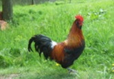
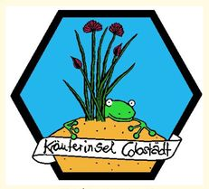

Eine würzige, rosettenbildende Vitamin C haltige Pflanze für
Salate, Suppen, Soßen und Essige welche auch in der kalten

Jahreszeit beerntbar ist. Besonders in nahrhaften und feuchten Böden
gezogen entfaltet das zarte, junge Kraut einen milden, gurkenartigen
Geschmack. Bei Hitze und Trockenheit werden die Blätter ehr derb
und bitter und laden somit weniger zum Verzehr ein. Das Kraut sollte
nicht mitkocht werden und sollte den fertigen Speisen zugefügt
werden.
Bei Stoffwechselerkrankungen wie Gicht und Rheuma wurde die
Pimpinelle als blutreinigendes Mittel eingesetzt. Vor allem die

Wurzel, welche durch ihren hohen Gerbstoffgehalt abstringierend und
blutsillend wirkt, wurde bei innerlichen und äußerlichen
Blutungen verwendet.